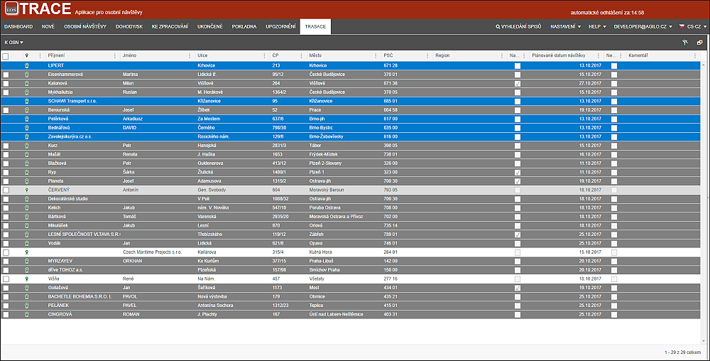

Seznam adres
Jedná se o prostor v levé části programu, ve kterém má uživatel možnost přetřídit adresy pomocí lokálního menu a přefiltrovat data pomocí standardních filtrů nad každým sloupcem či pomocí předdefinovaných filtrů.

V seznamu jsou uvedeny všechny adresy (podle vybraného filtru) které jsou definovány ve spise příznakem K osobní návštěvě. Protože každý spis (a tím pádem každý dlužník) může mít pouze jednu adresu k OSN, je možné nad data nahlížet formou "co adresa to jeden dlužník". Pro rychlou vizuální orientaci jsou řádky odlišené barevně.